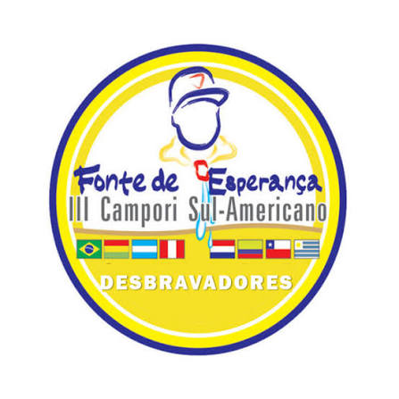

Camporis · III · 2005
III Campori da Divisão Sul-Americana
O terceiro encontro da Divisão é localizado, pela cobertura do campori seguinte, em Santa Helena, Paraná, em janeiro de 2005.

- Situação
- Realizado
- Local
- Santa Helena, Paraná, BrasilA reportagem do IV Campori, atribuída à Revista Adventista, diz que os oito países tinham se encontrado pela última vez em Santa Helena, Paraná, em 2005.
- Datas
- Janeiro de 2005O mês e o ano aparecem nessa reportagem. O dia exato de abertura e de encerramento continua em aberto.
- Tema oficial
- A confirmarTema oficial ainda não conferido em manual ou reportagem primária.
- Direção
- Pr. Erton KöhlerA mesma reportagem inclui Erton Köhler entre os organizadores das edições anteriores, ao lado de Cláudio Belz e José Maria Barbosa. Compilações ligam essa direção a 2005.
Não há, nesta página, um manual do III Campori. O que se publica vem da reportagem sobre o encontro de 2014, que olha para trás e situa o acampamento anterior em Santa Helena, no Paraná, em 2005.
Tema, dias exatos e total de participantes permanecem como campos provisórios. Eles podem ser completados em esta página quando uma fonte for conferida.
Curiosidades com fonte
- Santa Helena fica no oeste do Paraná, na mesma região em que, duas décadas antes, a Divisão tinha feito o primeiro campori, em Foz do Iguaçu.